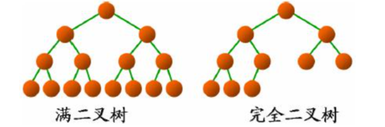
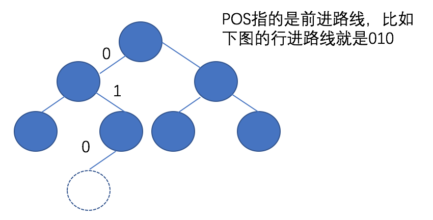
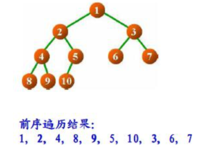
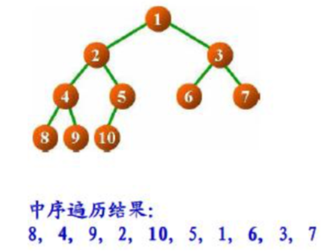
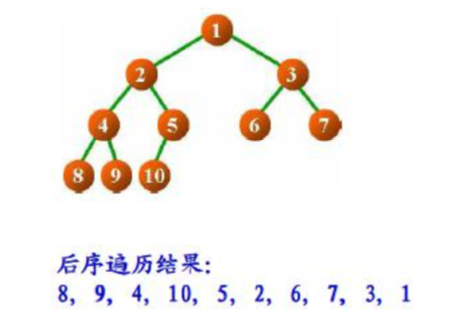
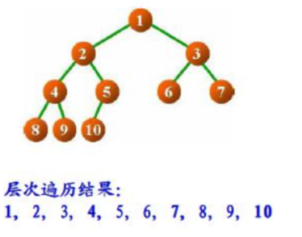
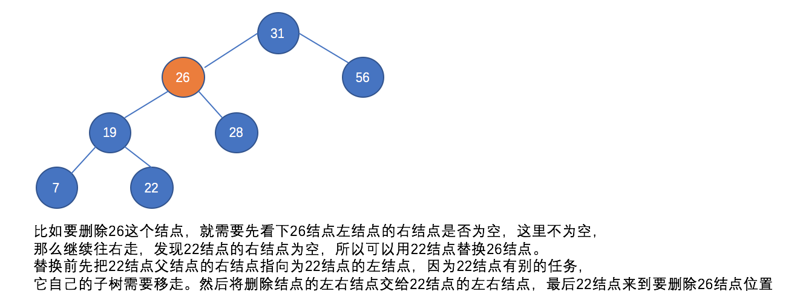

0x01 树的定义
树是一种非线性的数据结构。树是由一个或多个结点组成的有序结合，其中必有一个称为根(Root)的结点；剩下的结点被分成n>=0个互不相交的集合T1、T2…Tn，而且这些集合的每一个又都是树。树T1、T2…Tn称为根的子树。
树至少有一个结点(Root)。
树的度：所有结点中度的最大值。结点的度为结点拥有的子树数，度为0的结点称为叶结点，不为0的结点称为分支结点。
树的深度：组成该树各结点的最大层次。
有序树：树中结点的各子树从左向右是有次序的，子树间不能互换位置；否则为无序树。
0x02 二叉树的定义
每个结点至多只有两颗子树，度不能大于2，并且子树有左右之分，左右次序不能改变，这样的树称之为二叉树。
二叉树的五种基本形态：
- 空二叉树
- 只有一个根结点的二叉树
- 只有左子树
- 只有右子树
- 完全二叉树
一颗深度为k且有2k-1个结点的二叉树称为满二叉树；对二叉树的结点进行连续编号，约定编号从根结点起，自上而下，自左而右，深度为k，有n个结点的二叉树，当且仅当其每一个结点都与深度k的满二叉树中编号从1到n的结点一一对应时，称之为完全二叉树。

二叉树的第i层上至多有2k-1个结点；深度为k的二叉树至多有2k-1个结点；具有n个结点的完全二叉树的深度为log2>n+1。
具体示例代码如下，其中插入的时候用到了路线，即如果走到插入的位置，比如往左走即0，往右走即1
1
2
3
4
5
6
7
8
9
10
11
12
13
14
15
16
17
18
19
20
21
22
23
24
25
26
27
28
29
30
31
32
33
34
35
36
37
38
39
40
41
42
43
44
45
46
47
48
49
50
51
52
53
54
55
56
57
58
59
60
61
62
63
64
65
66
67
68
69
70
71
72
73
74
75
76
77
78
79
80
81
82
83
84
85
86
87
88
89
90
91
92
93
94
95
96
97
98
99
100
101
102
103
104
105
106
107
108
109
110
111
112
113
114
115
116
117
118
119
120
121
122
123
124
125
126
127
128
129
130
131
132
133
134
135
136
137
138
139
140
141
142
143
144
145
146
147
148
149
150
151
152
153
154
155
156
157
158
159
160
161
162
163
164
165
166
167
168
169
170
171
172
173
174
175
176
177
178
179
180
181
182
183
184
185
186
187
188
189
190
191
192
193
194
195
196
197
198
199
200
201
202
203
204
205
206
207
208
209
210
211
212
213
214
215
216
217
218
219
220
221
222
223
224
225
226
227
228
229
230
231
232
typedef unsigned long long BTPos;
typedef struct _bTreeNode BTreeNode;
struct _bTreeNode {
BTreeNode *left;
BTreeNode *right;
BTreeNode *next;
int value;
};
typedef struct _bTree BTree;
struct _bTree {
int count;
BTreeNode *root;
};
BTree* BTree_Create() {
BTree *tree = (BTree *)malloc(sizeof(BTree));
if(tree != NULL) {
tree->count = 0;
tree->root = NULL;
}
return tree;
}
// 创建树
void BTree_Destroy(BTree *tree) {
if(tree == NULL) return;
free(tree);
}
void BTree_Clear(BTree *tree) {
if(tree == NULL) return;
tree->count = 0;
tree->root = NULL;
}
int Recursive_Count(BTreeNode *node) {
if(node == NULL) return 0;
return Recursive_Count(node->left) + 1 + Recursive_Count(node->right);
}
int Recursive_Height(BTreeNode *node) {
if(node == NULL) return 0;
int lh = Recursive_Height(node->left);
int rh = Recursive_Height(node->right);
return ((lh > rh) ? lh : rh) + 1;
}
int Recursive_Degree(BTreeNode *node) {
if(node == NULL) return 0;
int num = 0;
if(node->left != NULL) num++;
if(node->right != NULL) num++;
if(num == 1) { // 二叉树度最多为2
int ld = Recursive_Degree(node->left);
int rd = Recursive_Degree(node->right);
if(num < ld) {
num = ld;
}
if(num < rd) {
num = rd;
}
}
return num;
}
// pos 路线图,count走几步,flag放在左边还是右边
STATUS BTree_Insert(BTree *tree, BTreeNode *node, BTPos pos, int count, int flag) {
if(tree == NULL || node == NULL || (flag != BT_LEFT && flag != BT_RIGHT)) return ERROR;
int bit = 0; // 作为目标
BTreeNode *parent = NULL;
BTreeNode *current = tree->root;
node->left = NULL;
node->right = NULL;
while (count > 0 && current != NULL) {
bit = pos & 1;
pos = pos >> 1;
parent = current;
if (bit == BT_LEFT) {
current = current->left;
}else if (bit == BT_RIGHT) {
current = current->right;
}
count--;
}
if(flag == BT_LEFT) {
node->left = current;
}else if (flag == BT_RIGHT) {
node->right = current;
}
if(parent == NULL) { // 插入的是根节点
tree->root = node;
}else{
if(bit == BT_LEFT) {
parent->left = node;
}else if (bit == BT_RIGHT) {
parent->right = node;
}
}
tree->count++;
return SUCCESS;
}
STATUS BTree_Delete(BTree *tree, BTPos pos, int count) {
if(tree == NULL) return ERROR;
int bit = 0;
BTreeNode *parent = NULL;
BTreeNode *current = tree->root;
while (count > 0 && current != NULL) {
bit = pos & 1;
pos = pos >> 1;
parent = current;
if (bit == BT_LEFT) {
current = current->left;
}else if (bit == BT_RIGHT) {
current = current->right;
}
count--;
}
if (parent == NULL) {
tree->root = NULL;
}else{
if(bit == BT_LEFT){
parent->left = NULL;
}else if (bit == BT_RIGHT) {
parent->right = NULL;
}
}
tree->count -= Recursive_Count(current);
return SUCCESS;
}
BTreeNode* BTree_Get(BTree *tree, BTPos pos, int count) {
if(tree == NULL) return NULL;
BTreeNode *node = NULL;
int bit = 0;
BTreeNode *current = tree->root;
while (count > 0 && current != NULL) {
bit = pos & 1;
pos = pos >> 1;
if (bit == BT_LEFT) {
current = current->left;
}else if (bit == BT_RIGHT) {
current = current->right;
}
count--;
}
node = current;
return node;
}
BTreeNode* BTree_Root(BTree *tree) {
return tree->root;
}
int BTree_Height(BTree *tree) {
if(tree == NULL) return 0;
return Recursive_Height(tree->root);
}
int BTree_Count(BTree *tree) {
if(tree == NULL) return 0;
return tree->count;
}
int BTree_Degree(BTree *tree) {
if(tree == NULL) return 0;
return Recursive_Degree(tree->root);
}
- (void)viewDidLoad {
[super viewDidLoad];
BTree *tree = BTree_Create();
struct _bTreeNode n1 = {NULL, NULL, NULL, 11};
struct _bTreeNode n2 = {NULL, NULL, NULL, 25};
struct _bTreeNode n3 = {NULL, NULL, NULL, 73};
struct _bTreeNode n4 = {NULL, NULL, NULL, 38};
struct _bTreeNode n5 = {NULL, NULL, NULL, 97};
BTree_Insert(tree, &n1, 0, 0, BT_LEFT);
BTree_Insert(tree, &n2, 0, 1, BT_LEFT);
BTree_Insert(tree, &n3, 1, 1, BT_LEFT);
BTree_Insert(tree, &n4, 00, 2, BT_LEFT);
BTree_Insert(tree, &n5, 10, 2, BT_LEFT);
BTree_Destroy(tree);
}
0x03 前序、中序、后序和层次遍历
前序遍历：又称深度优先遍历，首先访问根节点数据，然后访问左子树，最后访问右子树。

中序遍历：首先访问左子树，然后访问根节点数据，最后访问右子树。

后序遍历：首先访问左子树，然后访问右子树，最后访问根节点数据。

层次遍历：又称广度优先遍历，一层一层访问节点数据。

代码实现：
1 | // 前序遍历的递归实现 |
0x04 线索化二叉树
前序遍历每个节点，并把访问的节点以链表的形式保存。详细代码不再复述。
0x05 二叉排序树
之前一篇聊过二分查找。但当需要插入或者删除数据元素时，为了能够继续进行二分查找，需要大规模挪动有序表 中的数据元素，使得插入或者删除后的线性表保持有序。可以直接组织一棵具有二分查找特性的二叉树。
二分查找过程即变换为对树结点的查找过程；
由二分查找的特性可知树结点查找的时间复杂度为 O(log2n)；
只在叶结点处插入新结点即可保持特性不变；
删除树结点时也可以容易的保持特性不变。
二叉排序树可以是一颗空树，若它的左子树不空，那么左子树上所有结点的值均小于它的根结点的值；若它的右子树不空，那么右子树上所有结点的值均大于它的根结点的值。而且它的左右子树也分别是二叉排序树。
插入操作，比结点的值大，就往左边走；比结点的值小，就往右边走。
删除操作，如果是叶结点就直接删除；如果不是叶结点，有一个孩子的结点就用孩子结点替代原结点，如果大于1个孩子结点，那就用中序遍历下的直接前驱替换原结点。
代码实现：
1
2
3
4
5
6
7
8
9
10
11
12
13
14
15
16
17
18
19
20
21
22
23
24
25
26
27
28
29
30
31
32
33
34
35
36
37
38
39
40
41
42
43
44
45
46
47
48
49
50
51
52
53
54
55
56
57
58
59
60
61
62
63
64
65
66
67
68
69
70
71
72
73
74
75
76
77
78
79
80
81
82
83
84
85
86
87
88
89
90
91
92
93
94
95
96
97
98
99
100
101
102
103
104
105
106
107
108
109
110
111
112
113
114
115
116
117
118
119
120
121
122
123
124
125
126
127
128
129
130
131
132
133
134
135
136
137
138
139
140
141
142
143
144
145
146
147
148
149
150
151
152
153
154
155
156
157
158
159
160
161
162
163
164
165
166
167
168
169
170
171
172
173
174
175
176
177
178
179
180
181
182
183
184
185
186
187
188
189
190
191
192
193
194
195
196
197
198
199
200
201
202
203
204
205
206
207
208
209
210
211
212
213
214
215
216
217
218
typedef void Key;
typedef int (TreeNodeCompare)(Key*, Key*);
typedef struct _treeNode TreeNode;
struct _treeNode
{
Key* key;
TreeNode *left;
TreeNode *right;
};
typedef struct _tree Tree;
struct _tree {
int count;
TreeNode *root;
};
int Recursive_Count(TreeNode* node) {
if(node == NULL) return 0;
return Recursive_Count(node->left) + 1 + Recursive_Count(node->right);
}
int Recursive_Height(TreeNode* node) {
if(node == NULL) return 0;
int lh = Recursive_Height(node->left);
int rh = Recursive_Height(node->right);
return ((lh > rh) ? lh : rh) + 1;
}
int Recursive_Degree(TreeNode* node) {
if(node == NULL) return 0;
int degree = 0;
if(node->left != NULL) degree++;
if(node->right != NULL) degree++;
if(degree == 1) {
int ld = Recursive_Degree(node->left);
int rd = Recursive_Degree(node->right);
if(degree < ld) degree = ld;
if(degree < rd) degree = rd;
}
return degree;
}
STATUS Recursive_Insert(TreeNode *node, TreeNode *waitNode, TreeNodeCompare *compare) {
if(node == NULL || waitNode == NULL) return ERROR;
int ret = compare(node->key, waitNode->key);
if(ret == 0) return ERROR;
if(ret < 0) {
if(node->left != NULL) {
ret = Recursive_Insert(node->left, waitNode, compare);
}else{
node->left = waitNode;
}
}else{
if(node->right != NULL) {
ret = Recursive_Insert(node->right, waitNode, compare);
}else{
node->right = waitNode;
}
}
return ret != 0 ? SUCCESS : ERROR;
}
TreeNode* Recursive_Get(TreeNode *node, Key *key, TreeNodeCompare *compare) {
if(node == NULL || key == NULL) return NULL;
TreeNode *gNode = NULL;
int ret = compare(node->key, key);
if(ret == 0) {
gNode = node;
}else if (ret < 0) {
gNode = Recursive_Get(node->left, key, compare);
}else{
gNode = Recursive_Get(node->right, key, compare);
}
return gNode;
}
TreeNode* Recursive_Delete_Node(TreeNode **pNode) {
TreeNode *node = *pNode;
// 如果左结点空的话，右子树接上删除结点的位置
if((*pNode)->left == NULL) {
*pNode = (*pNode)->right;
// 如果右结点空的话，左子树接上删除结点的位置
}else if((*pNode)->right == NULL) {
*pNode = (*pNode)->left;
// 如果左右结点都存在
}else{
TreeNode *g = *pNode;
TreeNode *c = (*pNode)->left; // 这个结点是要替换到要删除的结点上去的
// 找到左子树右尽头，这个右尽头的结点是要替换到要删除的结点上去的
while (c->right != NULL) {
g = c;
c = c->right;
}
if(g != *pNode) {
// c是右尽头，所以不会有右子树，因为这个结点要被移植到删除的结点位置上，所以要把其左结点移植到要删除结点的右边
g->right = c->left;
}else{
// c是右尽头，所以把c的左子树移植到被删除结点的左边，实际就是清空c下面的结点挂靠关系
g->left = c->left;
}
// 把删除结点的左右结点移植到新的结点上
c->left = (*pNode)->left;
c->right = (*pNode)->right;
*pNode = c;
}
return node;
}
TreeNode* Recursive_Delete(TreeNode **pNode, Key *key, TreeNodeCompare *compare) {
if(pNode == NULL || *pNode == NULL || key == NULL) return NULL;
TreeNode *node = NULL;
int ret = compare(key, node->key);
if(ret == 0) {
node = Recursive_Delete_Node(pNode);
}else if(ret < 0) {
node = Recursive_Delete(&((*pNode)->left), key, compare);
}else{
node = Recursive_Delete(&((*pNode)->right), key, compare);
}
return node;
}
Tree* Tree_Create() {
Tree *tree = (Tree *)malloc(sizeof(Tree));
if(tree != NULL) {
tree->root = NULL;
tree->count = 0;
}
return tree;
}
void Tree_Destroy(Tree *tree) {
free(tree);
}
STATUS Tree_Insert(Tree *tree, TreeNode *node, TreeNodeCompare *compare) {
if(tree == NULL || node == NULL) return ERROR;
int ret = SUCCESS;
node->left = NULL;
node->right = NULL;
if(tree->root == NULL) {
tree->root = node;
}else{
ret = Recursive_Insert(tree->root, node, compare);
}
if(ret == SUCCESS) tree->count++;
return ret;
}
TreeNode* Tree_Delete(Tree *tree, Key *key, TreeNodeCompare *compare) {
if(tree == NULL || key == NULL) return NULL;
TreeNode *node = NULL;
node = Recursive_Delete(&tree->root, key, compare);
return node;
}
TreeNode* Tree_Get(Tree *tree, Key *key, TreeNodeCompare *compare) {
if(tree == NULL || key == NULL) return NULL;
TreeNode *node = NULL;
node = Recursive_Get(tree->root, key, compare);
return node;
}
int Tree_Count(Tree *tree) {
return Recursive_Count(tree->root);
}
int Tree_Height(Tree *tree) {
return Recursive_Height(tree->root);
}
int Tree_Degree(Tree *tree) {
return Recursive_Degree(tree->root);
}
int Compare_Key(Key* k1, Key* k2) {
return (int)k1 - (int)k2;
}
二叉排序树时间复杂度为O(logn)。虽然二叉排序树解决了既有数组的取值高效，又有链表增删的高效，但当所有节点只有左节点（如果插入节点集本身是大到小排列）；或所有节点只有右节点（如果插入节点集本身是小到大排列）。在这种情况 下，排序二叉树就变成了普通链表，其检索效率就会很差。需要引出AVL树和红黑树这两种平衡二叉树了。
0x06 树状打印二叉树
对于打印二叉树，我们可以按照层次打印来打印顺序，换行的话我们可以比较当前结点的位置是否一致来判断是不是要换行。如果要获取结点的位置，我们需要改动点树的结构，结点新加一个成员变量parent，表示父结点。
1 |
|
0x07 哈希表
开发过程中，常常需要应用到映射关系，即一个key对应一个value，比如iOS中的NSDictionary，事实上数组也是一个简单又高效的哈希表。
我们使用二叉排序树来构建一个哈希表：
1 | typedef void HashKey; |